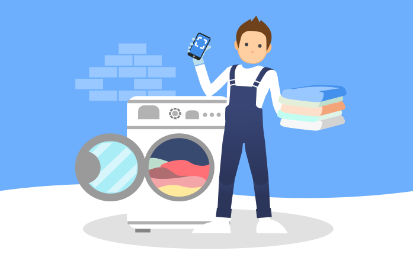

<app-header></app-header>
<div id="first-page-main">
    
    <div id="first-page-tittle">Suchen & Finden</div>
    <div id="description">
        Wähle dein Eikett aus und finde heraus, was
        es bedeutet und wie man die Kleidung auf die richtige Art und Weise wäscht.
    </div>
    <ul id="first-page-icons">
        
        <li class="first-page-icon"  *ngFor="let item of icons"  (click)='select(item)' [class.selected]=item.isSelected >
            
        </li>

    </ul>
    <a id="button" [routerLink]="['/second-page']" routerLinkActive="router-link-active"   target="_self" >
        Nächster Schritt
    </a>
    
</div>
<app-footer></app-footer>